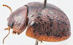
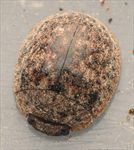
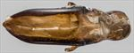
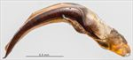
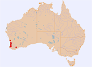

Click on images to enlarge
![Male, Badgingarra, S.W. Western Australia [2017-288]](assets/image/Ta154/Ta154_A17-288.jpg){kind=link}

Male, Badgingarra, S.W. Western Australia [2017-288]
![Adult, Hopefield, South Africa [Cecil Roux, iNaturalist]](assets/image/Ta154/Ta154_iNat_Cecile_Roux_SM.jpg){kind=link}

Adult, Hopefield, South Africa [Cecil Roux, iNaturalist]


Aedeagus, dorsal view (Perth, S.W. Western Australia)


Aedeagus, lateral view (Perth, S.W. Western Australia)


Distribution
Name
Trachymela sp. Ta154
Reference specimen
2017-276, Perth, Western Australia.
Adult Description
Length: ♂ 5.7–6.5 mm (n=7), ♀ 6.1–7.1 mm (n=9).
Colouration:
- Head: mid-brown, sometimes almost completely so, but more often with some black areas, most often including one or more of: the area between eyes and antennal insertions, along the fronto-clypeal suture, and at rear of frons (usually visible only with head protruded slightly), less often the whole of clypeus is black, or rarely, black extends to anterior of frons; labrum yellowish-brown, mandibles with black tips; antennomeres 1–4 uniformly light brown, 5–11 variable, sometimes uniformly darker or grading towards darker brown (very rarely black) at apex, often only distal and lateral edges are darker.
- Pronotum: brown, concolorous with or fractionally darker than head, with 4 black maculae present – the inner two are positioned with their lateral edge level with inside edge of each eye and slightly anterior to centre of pronotum, the outer one is directly behind centre of eye and centred longitudinally; these maculae may be roughly the same size or the inner spots may be larger, only rarely are they very small or only slightly darker than surrounds.
- Scutellum: black.
- Elytra: brown, concolorous with pronotum, with small, round, raised black wart-like protuberances scattered somewhat unevenly over much of surface of disc; antero-median depression is less densely populated with these pustules and they are usually smaller there; a heavier concentration is present just behind depression, where pustules sometimes merge into continuous elevated black patches; pustules sometimes merge in posterior half of disc to form extended black longitudinal ridges; a row of black pustules extends along the margin of discal area starting under the humeral callus and continues into marginal sulcus in posterior third almost to apex; a narrow border surrounding the scutellum is often black; punctures are concolorous with or very fractionally darker than interstices; humeral callus black.
- Venter & Legs: head mostly black, thoracic ventrites black, legs contrasting light- to mid-brown, abdominal ventrites dark brown, sometimes tending to black, elytral epipleura brown, rarely with some black colouration.
- Cuticular Wax: light brown, scattered evenly to a little unevenly over whole of dorsal surface.
Morphology:
- Shape: very evenly rounded over middle of dorsal surface viewed laterally, with curvature flattening anteriorly over pronotum and head and increasing posteriorly to meet ventral surface at a steep angle, greatest height viewed laterally is clearly in front of middle of elytral margin.
- Head: punctures small (pd ≈ 1–1.5 × ef), very evenly and densely distributed, surface with only a few wrinkles. Antennae very short (AL/BL: ♂ 37–43%, ♀ 34–37%), filiform, outer segments noticeably flattened.
- Pronotum: almost evenly curved transversely with lateral margins very slightly explanate, foveal depression shallow, confined to anterior half of pronotum, with a small clearly defined and almost round elevated and sparsely punctured area in middle, puncturation usually clearly impressed, similar in size to those on head and evenly distributed in discal area, becoming much coarser from foveal depression to lateral margins, interstices smooth in discal area, rarely slightly rough but never so as to obscure punctures. Thick front margins join somewhat thinner lateral margins in a smoothly rounded right-angle, with lateral margin initially almost straight for more than halfway to posterior margin before curving smoothly and gradually towards rear margin, becoming considerably thicker near rear margin.
- Scutellum: smooth and unpunctured or with a few very shallow punctures.
- Elytra: surface evenly curved transversely over discal region, sometimes slightly explanate at margins, a very shallow depression extends across surface just in front of middle, punctures large and distinct and relatively evenly distributed between the verrucae and set deeply among the network of slightly raised interstices, much finer punctures are scattered on the interstices, small round verrucae, sometimes with a small puncture in centre, are scattered unevenly over elytral surface, with their distribution described in the colouration section above, marginal sulcus deep in posterior third, surface continuous under humeral callus. Vertical extension of epipleura considerable (HCE/PW = 0.36–0.38), a few very short and scattered setae usually present along inner edge in posterior quarter.
- Venter: prosternal process narrowest anteriorly or almost parallel-sided in anterior half, open or very lightly closed anteriorly, short setae sparsely distributed over prosternal process and mesoventrite, a single seta on anterior and median trochanter; front edge of metaventrite beveled, truncate.
Male Genitalia (Aedeagus):
- Dimensions: short (LPE/BL = 27–29%), lanceolate.
- Dorsal view: shaft widest at rear with sides initially parallel from basal sulcus to about middle, then converging in an almost straight line to tip, a slight unevenness in the convergence producing a weak concavity in each side near ostial opening; sides strongly sclerotized in contrast with the membranous dorsal surface; a dorso-median channel well-defined and long, ostium very small, tip triangular.
- Lateral view: shaft sharply curved at 120° a short distance in front of basal sulcus, lower edge towards apex from curve only very lightly curved until close to apex where there is a slight increase in curvature, tip deflexed.
Immature Stages
- Eggs: Dark brown, laid under loose bark or cracks in bark (Cillié 1997).
- Larvae: Early instars black, later instar paler, almost purplish, with a conspicuous yellowish band around thorax (Cillié 1997).
Similar species
- Ta188: a larger species, with very little overlap in the size distribution with that of Ta154. The distribution of verrucae on the elytra is slightly less dense than that of Ta154 and appears more ordered, with verrucae not as concentrated behind the antero-median depression and a long verrucal ridge usually present in the posterior portion of VR5 (less often also in VR3 and/or VR5). It has a very dark ventral surface with contrasting light-brown legs like Ta154, but almost always has black inner epipleura. The aedeagus is essentially identical to that of Ta154 in both size and shape.
- Ta163: this is a slightly smaller species on average, though there is considerable overlap in the size distributions. Ta163 tends to be paler ventrally, though this varies from almost entirely indistinguishable from the colouration in Ta154 to entirely light brown. Only males can be reliably distinguished by the form of the aedeagus, which in Ta163 narrows suddenly around the middle.
- Ta182: a superficially similar species, that is distinguishable by the more extensive black in the foveal area of the pronotum, with the inner black markings forming an extension of verrucal row VR3. Its elytral verrucae are more regularly arranged and at a lower density than those of Ta154 and the venter is light brown.
Notes
- Taxonomy: Ta154 is the species that was introduced into South Africa in the 1980s, as verified by comparison with a male specimen from South Africa. That species was identified as Trachymela tincticollis (Blackburn) by Selman (Tribe & Cillié 1997). There is, however, considerable doubt about this identification, discussed in detail under the notes to T. tincticollis. There are at least 3 other species in south-western Australia that have a similar dorsal appearance to Ta154 (Ta163, Ta182, Ta188). Of these, only Ta188 would include the tincticollis type within its size distribution, and it also has the black venter with paler legs that Blackburn describes for tincticollis. Its distribution of verrucae is more open and much like that of the type specimen of tincticollis, rather than the denser distribution of Ta154. The tentative conclusion is that it is in fact Ta188 which is conspecific with the type specimen of T. tincticollis. It is also possible that Ta188 is conspecific with Ta154 – their aedeagi are essentially identical in size and shape and they coincide in all other morphological measurements except body size. Two factors argue against this: (1) Ta188 has been collected from Eucalyptus marginata (subgenus Eucalyptus), which is not a known host for Ta154, and (2) combining them would result in a species with an unusually broad and bimodal size distribution. It is possible but unlikely that Ta154 is granaria Chapuis; Chapuis’ described length of ≈ 6 mm falls within the range of male specimens of Ta154, but Blackburn noted tincticollis "resembles P. granaria Chp. in colour and markings of upper surface, but differs by its black underside...", making it more likely that granaria is conspecific with Ta163.
- Host Associations: Recorded from tuart, Eucalyptus gomphocephala. Cillié (1997) records E. gomphocephala as the primary host of T. tincticollis, but observes feeding by adults and larvae also on E. lehmanii, E. globulus, E. camaldulensis, E. sideroxylon, E. melliodora, E. ficifolia, and E. grandis. These host species are all in the subgenus Symphyomyrtus, except for ficifolia, which is a bloodwood (Corymbia).
Copyright © 2026. All rights reserved.